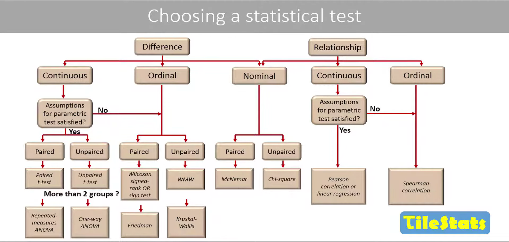
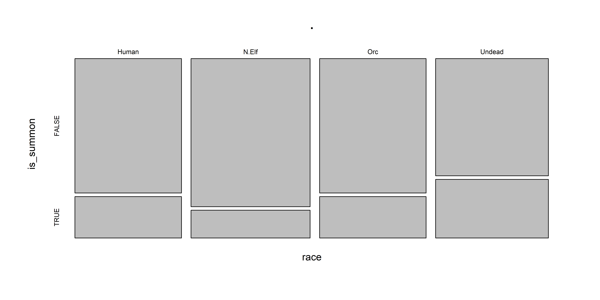
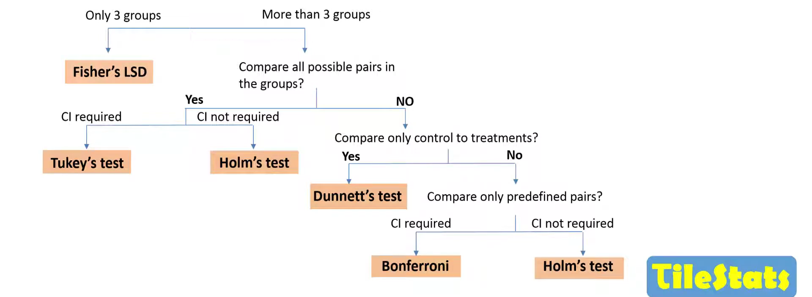

Язык программирования R для анализа данных: лекция 12
Хи-квадрат, тест Фишера, Rmd/Quarto
Тема лекции
Как выбрать статистический тест?
Тест хи-квадрат и тест Фишера для сравнения категориальных данных
Метод главных компонентПоправки на множественное тестирование
Разбор Rmd/Quarto для создания красивых отчетов и презентаций в R
Как выбрать статистический тест?
Взято с супер крутого канала по статистике TileStats
Работа с категориальными переменными
Таблицы сопряженности
Таблицы сопряженности (contingency tables) показывают, как частоты категорий по одной переменной зависят от значения другой категориальной переменной.
Можно узнать:
Различается ли вероятность быть съеденной птицей у светлых и темных улиток?
Насколько более вероятно развитие рака легких у курильщиков по сравнению с некурящими?
Будет ли ниже вероятность инфаркта у людей, принимающих аспирин?
Анализ сопряженности
Анализ сопряженности позволяет оценить, насколько связаны (“сопряжены”) друг с другом категориальные переменные.
Если переменные независимы, то значение одной из переменных не дает информации о вероятностях категорий другой переменной.
Слева — смерти среди 2092 пассажиров Титаника (данные из Dawson, 1995).
Справа — тот же график, если бы вероятность гибели не зависела от пола.

рис. 9.1-1 из Whitlock, Schluter, 2015
Тест \(\chi^2\) для сравнения категориальных данных
Называется тест сопряженности хи-квадрат. Позволяет протестировать гипотезу о независимости категориальных переменных.
H0 — категориальные переменные независимы друг от друга.
H1 — категориальные переменные зависимы.
Возьмем старые данные по Warcraft 3, создадим переменную, обозначающую, является ли юнит призванным (is_summon):
Тест \(\chi^2\) для сравнения категориальных данных
Попробуем посчитать, связаны ли переменные race и is_summon (является ли юнит призванным).
Для подсчета количества элементов в каждой категории есть функция table()
Визуализация данных хи-квадрат
Тест хи-квадрат может работать не совсем корректно, если в ячейках таблицы мало значений по какой-либо категории. В таком случае лучше воспользоваться точным тестом Фишера.
Точный тест Фишера: формула
Данные по мотивам статьи Reed and Janzen, 1999
Таблица 2x2:
| улитки съеденные | улитки живые | Всего | |
|---|---|---|---|
| светлые | a=36 | b=4 | a+b |
| темные | c=50 | d=446 | c+d |
| a+c | b+d | n |
Формула:
\[ p = \frac{(a+b)!(c+d)!(a+c)!(b+d)!}{n!a!b!c!d!} \]
Точный тест Фишера: запуск в R
Функция fisher.test() в базовом R.
| eaten | not_eaten | |
|---|---|---|
| light | 36 | 4 |
| dark | 50 | 446 |
Многомерный анализ данных
Метод главных компонент (Principal Component Analysis, PCA)
Многомерное шкалирование (Multidimensional Scaling, MDS)
Кластерный анализ
Факторный анализ
Дискриминантный анализ
Поправки на множественное тестирование
Существует 2 принципиально разных подхода к поправкам на множественное тестирование.
Контроль групповой вероятности ошибки I рода (FWER, family-wise error rate)
Тесты для попарных сравнений групп: пост-хоки (поправка Тьюки, поправка Даннета, тест Фишера LSD и тд)
Тесты, которые поправляют значимость у набора p-value (поправка Бонферрони, Холма-Бонферрони и тд)
Контроль доли ложных открытий (FDR, false discovery rate): поправка Benjamini-Hochberg, поправка Benjamini-Yekutieli.
Начнем разбор с первого способа
FWER – family-wise error rate
FWER – вероятность совершить хоть одну ошибку первого рода.
\[ FWER = 1 - (1-\alpha)^k, \]k - количество тестов, \(\alpha\) - уровень значимости.
Для корректного применения формулы тесты должны быть независимыми.
Если это не так, то посчитать точный FWER можно с помощью симуляции, а по формуле вычисляется верхняя граница (то есть максимально возможное значение вероятности совершить ошибку I рода).
Пример ситуаций, когда тесты зависимы:
Собрали две группы образцов и измерили у них 20 параметров. Тесты зависимы, поскольку пул образцов один и тот же для каждого измеренного параметра.
У нас 3 группы, делаем попарное сравнение каждой группы с каждой. Тесты зависимы, поскольку одна и та же группа участвует в двух тестах.
Симуляция независимых тестов для подсчета FWER
Генерируем выборки размером 100 из одной генеральной совокупности (стандартного нормального распределения) и сравниваем их t-тестом 10000 раз. Считаем, в скольких процентах случаев из заданного количества тестов (5, 10, 50, 100) мы получили p-value < 0.05.
Тесты независимые, поскольку каждый раз извлекаем новую выборку.
[1] 0.2179[1] 0.3975[1] 0.9195Поправка Бонферрони (Bonferroni)
Самый простой способ контролировать вероятность ошибки первого рода – это изменить критический уровень значимости.
\[ FWER = 1 - (1-\frac{\alpha}{k})^k, \]
Делим \(\alpha\) на число тестов -> получаем новый p-уровень значимости, ниже которого результаты будут считаться статистически значимыми.
Или умножаем каждое p-value на количество тестов -> если поправленное p-value < 0.05, то результат считается статистически значимым.
При таком подходе мы контролируем вероятность ошибки первого рода, однако завышаем вероятность ошибки второго рода -> уменьшаем мощность теста.
Поправка Бонферрони (Bonferroni)
Проверим FWER после поправки.
[1] 0.0547[1] 0.0459[1] 0.0474[1] 0.0504Контролирует вероятность совершить хоть 1 ошибку I рода на заданном уровне 0,05. В итоге страдает мощность теста.
Поправка Холма
Более мягкая поправка. Разберем на примере как работает.
Сортируем и ранжируем p-value по убыванию, далее по формуле умножаем каждое p-value на \((m+1-rank)\), где \(m\) - количество тестов, \(rank\) - ранг p-value.
| pvalue | rank_pvalue | formula | result |
|---|---|---|---|
| 0.003 | 1 | 0.003*(6 + 1 - 1) | 0.018 |
| 0.004 | 2 | 0.004*(6 + 1 - 2) | 0.020 |
| 0.040 | 3 | 0.04*(6 + 1 - 3) | 0.160 |
| 0.180 | 4 | 0.18*(6 + 1 - 4) | 0.540 |
| 0.240 | 5 | 0.24*(6 + 1 - 5) | 0.480 |
| 0.870 | 6 | 0.87*(6 + 1 - 6) | 0.870 |
Далее нужно задать, что поправленные p-value могут только возрастать.
Поправка Холма
| pvalue | rank_pvalue | formula | result | p_adjusted |
|---|---|---|---|---|
| 0.003 | 1 | 0.003*(6 + 1 - 1) | 0.018 | 0.018 |
| 0.004 | 2 | 0.004*(6 + 1 - 2) | 0.020 | 0.020 |
| 0.040 | 3 | 0.04*(6 + 1 - 3) | 0.160 | 0.160 |
| 0.180 | 4 | 0.18*(6 + 1 - 4) | 0.540 | 0.540 |
| 0.240 | 5 | 0.24*(6 + 1 - 5) | 0.480 | 0.540 |
| 0.870 | 6 | 0.87*(6 + 1 - 6) | 0.870 | 0.870 |
На самом деле я здесь схитрила и последнюю колонку посчитала функцией p.adjust()
Можем убедиться, что у нас подсчитано все верно:
Поправка Холма
Поскольку для самого минимального p-value поправленное p-value такое же как и у Бонферрони, то поправка Холма контролирует FWER на том же уровне 0.05 (что и поправка Бонферрони), при этом не так сильно снижает мощность тестов.
Проверим на 100 тестах:
Поправка Тьюки (Tukey)
\[ q_s = \frac{M_1 - M_2}{\sqrt{\frac{SS_w}{2}(\frac{1}{n_A}+\frac{1}{n_B})}}, \]
где M1 > M2 (средние в группе), nA, nB - размер 1 и 2 выборки, SSW - внутригрупповая сумма квадратов в ANOVA.
Для проверки гипотезы используется studentized range distribution, студентизированное распределение.
Тестируется сравнение средних каждой группы с каждой, необязательно использовать только после значимой ановы (однако в тесте используется SSW и количество степеней свободы из таблицы ановы).
Studentized range distribution
k - количество групп, df - количество степеней свободы в SSW — количество наблюдений-количество групп.

Тест Даннета (Dunnet)
Тестирует сравнение контроля с остальными группами, используется в ситуации, когда не нужно сравнение каждой группы с каждой.
Как выбрать, какую поправку использовать?
Картинка отсюда
FDR - false discovery rate
| H0 верна (различий нет) | H0 неверна (различие есть) | |
|---|---|---|
| Не отклонить H0 | True Negative (TN) | False Negative (FN) |
| Отклонить H0 | False Positive (FP) | True Positive (TP) |
\[ FDR = \frac{FP}{FP + TP} \]
Подробнее в этом видео
Расчет FDR
- Сортируем и ранжируем p-value по возрастанию
- Каждое p-value умножаем на \(\frac{m}{rank}\), где \(m\) – количество тестов, \(rank\) – ранг p-value
| pvalue | rank_pvalue | formula | result |
|---|---|---|---|
| 0.005 | 1 | 0.005*(8/1) | 0.0400000 |
| 0.009 | 2 | 0.009*(8/2) | 0.0360000 |
| 0.019 | 3 | 0.019*(8/3) | 0.0506667 |
| 0.022 | 4 | 0.022*(8/4) | 0.0440000 |
| 0.051 | 5 | 0.051*(8/5) | 0.0816000 |
| 0.101 | 6 | 0.101*(8/6) | 0.1346667 |
| 0.361 | 7 | 0.361*(8/7) | 0.4125714 |
| 0.387 | 8 | 0.387*(8/8) | 0.3870000 |
Расчет FDR
Итоговое FDR вычисляется так, чтобы p-value не убывали, но при этом приводится в меньшую сторону (в отличие от поправки Холма).
| pvalue | rank_pvalue | formula | result | p_adjusted | reject_H0 |
|---|---|---|---|---|---|
| 0.005 | 1 | 0.005*(8/1) | 0.0400000 | 0.0360000 | yes |
| 0.009 | 2 | 0.009*(8/2) | 0.0360000 | 0.0360000 | yes |
| 0.019 | 3 | 0.019*(8/3) | 0.0506667 | 0.0440000 | yes |
| 0.022 | 4 | 0.022*(8/4) | 0.0440000 | 0.0440000 | yes |
| 0.051 | 5 | 0.051*(8/5) | 0.0816000 | 0.0816000 | no |
| 0.101 | 6 | 0.101*(8/6) | 0.1346667 | 0.1346667 | no |
| 0.361 | 7 | 0.361*(8/7) | 0.4125714 | 0.3870000 | no |
| 0.387 | 8 | 0.387*(8/8) | 0.3870000 | 0.3870000 | no |
Работа с RMarkdown
Введение в RMarkdown и Quarto
File -> New File -> Markdown File
| Markdown | Вывод |
|---|---|
| *курсив* и **полужирный** | курсив и полужирный |
| надстрочный^2^ / подстрочный~2~ | надстрочный2 / подстрочный2 |
| ~~зачеркнутый~~ | |
| `vebratim code` | vebratim code |
Заголовки
| Markdown | Вывод |
|---|---|
| # Заголовок 1 | Заголовок 1 |
| ## Заголовок 2 | Заголовок 2 |
| ### Заголовок 3 | Заголовок 3 |
| #### Заголовок 4 | Заголовок 4 |
Картинки и гиперссылки
[ссылка](https://github.com/ubogoeva/Rcourse_NSU)


Tip
В Quarto можно использовать визуальный редактор, который упрощает работу с Markdown-синтаксисом.
Формулы на основе LaTeX-синтаксиса
Математические формулы в Quarto используют разделители $ для встроенных математических элементов текста и разделители $$ для выносной математики на основе LaTeX-синтаксиса.
| Markdown | Вывод |
|---|---|
| inline math: $E = mc^{2}$ | inline math: \(E = mc^{2}\) |
display math: $$E = mc^{2}$$ |
display math: \[E = mc^{2}\] |
Формулы на основе LaTeX-синтаксиса
Более сложный пример:
$$
var = \frac{\sum_{i=1}^n{(x_i - \overline{x})^2}}{n-1}
$$
\[ var = \frac{\sum_{i=1}^n{(x_i - \overline{x})^2}}{n-1} \]
Все формулы в рамках этого курса были сверстаны с использованием LaTeX, очень удобная штука, рекомендую.
Ячейки исполняемого кода
Создадим Rmd документ
File -> New File -> R Markdown
Проиллюстрировать в R
Работа с Quarto
Сайт на Quarto, посвященный работе с Quarto с материалами на Quarto от Евгения Матерова.
У меня сайт курса и презентации тоже сделаны в Quarto.

Проиллюстрировать создание документа и презентации -> в новом проекте RStudio
Материалы для дальнейшего изучения
Книги и ютуб каналы:
Чаты по статистике и R
Набор курсов по R Марины Варфоломеевой (СПбГУ)
Спасибо всем за посещение курса!
Если понравилось, переходите по ссылке: